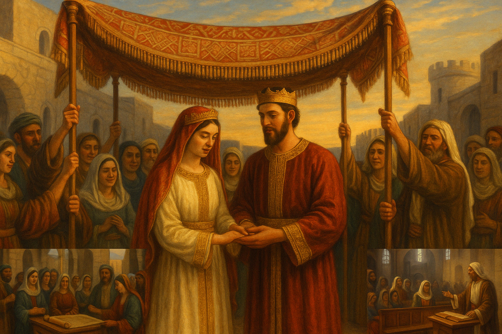
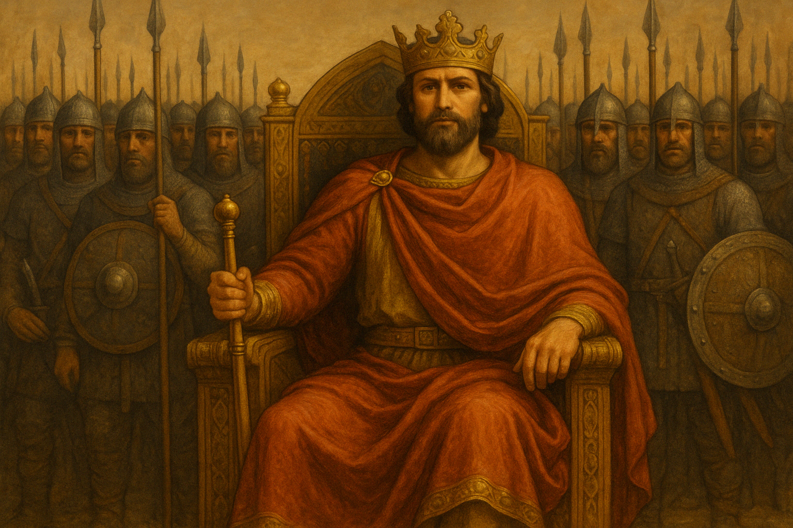
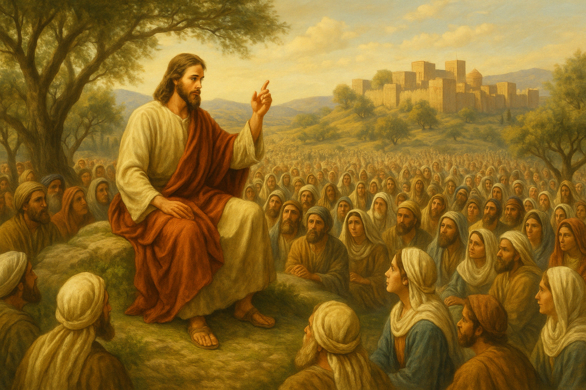
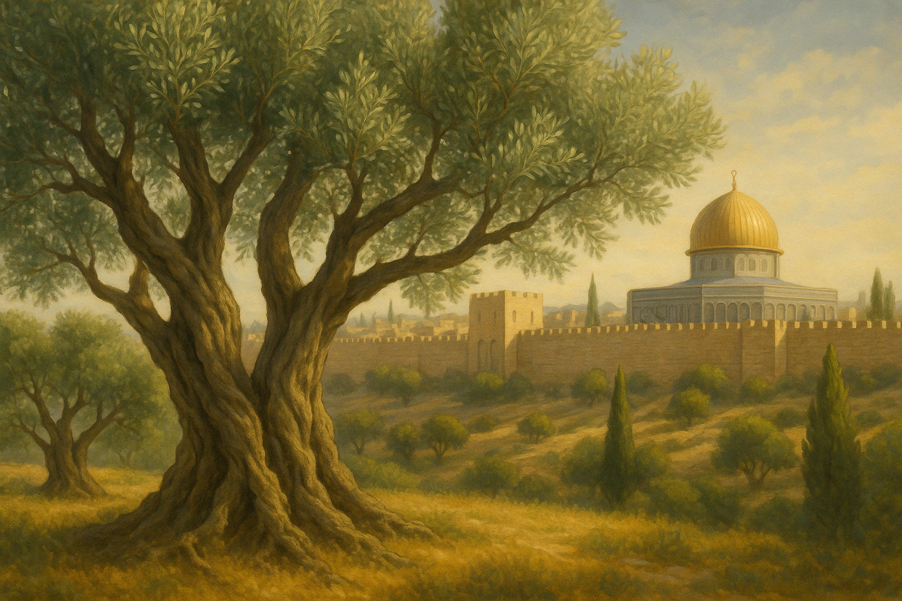
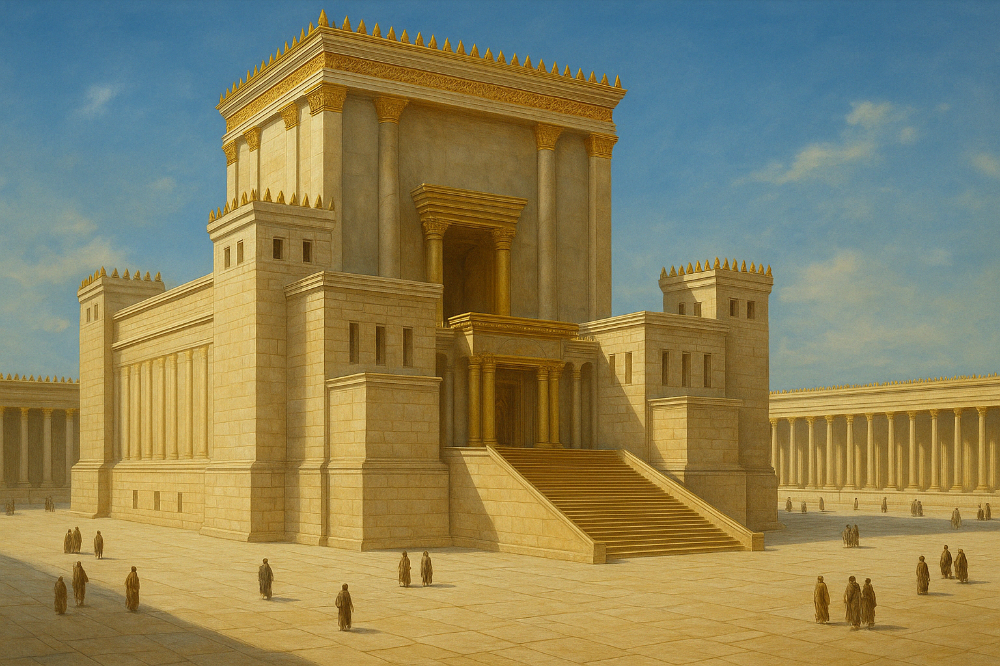

¿Qué es la Exégesis?
La exégesis bíblica es el estudio meticuloso del texto original de las Escrituras para descubrir su significado histórico, literario y teológico. Este proceso nos permite entender lo que el texto significaba para sus primeros receptores y cómo esa verdad se aplica a nuestra vida hoy. A través de un análisis cuidadoso del contexto, el lenguaje y la estructura del texto, podemos extraer con fidelidad el mensaje de Dios para su pueblo.

Exégesis del Cantar de los Cantares
Un análisis detallado del capítulo 3 de este poema hebreo, explorando sus imágenes del amor y su significado en las tradiciones judía y cristiana.

El Sacerdocio según el Orden de Melquisedec
Estudio profundo de Hebreos 7, analizando la figura de Melquisedec y la superioridad del sacerdocio de Cristo sobre el sistema levítico.

El Discurso del Monte de los Olivos
Análisis escatológico de Mateo 24, donde Jesús habla sobre la destrucción del Templo, el fin de los tiempos y su Segunda Venida.

El Futuro de Israel en el Plan de Dios
Exégesis profunda de Romanos 11, analizando la relación entre judíos y gentiles en el plan divino de salvación y el misterio de la restauración de Israel.

Templo, Sacerdocio e Historia Bíblica
Un recorrido por los templos de Jerusalén, los lugares altos, los Macabeos, la comunidad de Qumrán y el ministerio de Juan el Bautista.
"Procura con diligencia presentarte a Dios aprobado, como obrero que no tiene de qué avergonzarse, que usa bien la palabra de verdad."
2 Timoteo 2:15